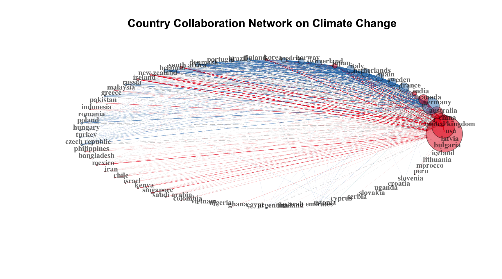
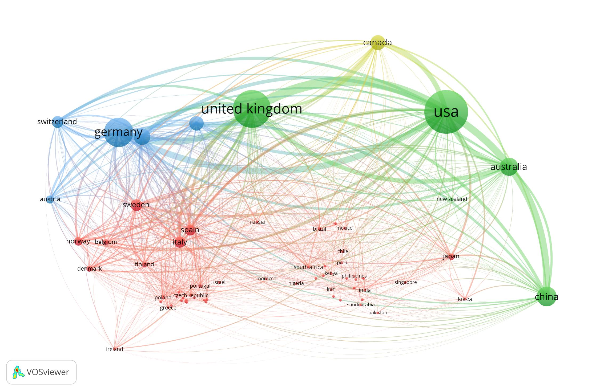
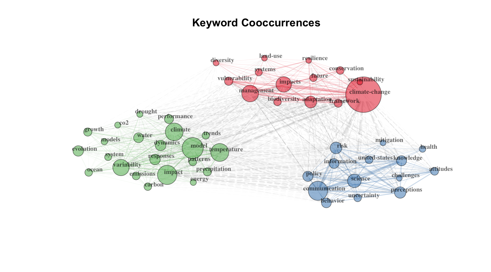

Installing forcats [1.0.0] ...
OK [linked cache in 0.51 milliseconds]
* Installed 1 package in 1.8 seconds.
Code
library(forcats)library(ggplot2)
Read in bib files downloaded from Web of Science and combine them together
Data Wrangling: The codes below are used to de-duplicate row names in M_all
Code
M_all <- M_all %>%mutate(random_id =row_number())test <-tibble(random_id = M_all$random_id, names =row.names(M_all)) %>%mutate(new_names =str_replace(names, "\\.\\.\\..*$", "")) %>%#if the rownames contain "...", delete everything after "..."arrange(names) %>%#arrange names in alphabetic ordergroup_by(new_names) %>%#articles with the same row names appear next to each othermutate(single =row_number()) %>%#create a new column indicating the number of row for a certain articleungroup()test_2 <- test %>%select(random_id, single, new_names) M_all_2 <-left_join(M_all, test_2, by ="random_id")M_all_2 <- M_all_2 %>%filter(single ==1)row.names(M_all_2) <- M_all_2$new_namesM_all_2 <- M_all_2 %>%select(-new_names)
Bibliometric analysis using “bibliometrix” package
NetMatrix_1 <-biblioNetwork(M_all_2c, analysis ="collaboration", network ="countries", sep =";")net_1=networkPlot(NetMatrix_1, n =dim(NetMatrix_1)[1], Title ="Country Collaboration Network on Climate Change", type ="circle",size=TRUE, remove.multiple=FALSE,labelsize=0.8, degree =100, edges.min =10,cluster ="louvain") #at least 10 collaboration, published at least 100 articles

Visualize country collaboration network using VOSviewer
Code
#net2VOSviewer(net_1) #open up VOSviewer to further edit the network graph. Need to install VOSviewer first and need to set the working directory to the folder where VOSviewer.jar located

country collaboration network
Create keyword co-occurrences network
Code
NetMatrix_keyword <-biblioNetwork(M_all_2, analysis ="co-occurrences", network ="keywords", sep =";")net_keyword=networkPlot(NetMatrix_keyword, normalize="association", weighted=T, n =50, Title ="Keyword Cooccurrences",type ="fruchterman", size=T,edgesize =5,labelsize=0.7, cluster ="optimal")

Code
# looking at the top 50 keywords identified by the package with the cluster method "optimal
Visualize keyword co-occurence network using VOSviewer
# Bibliometrics, pt. 2## Install and upload packages```{r}#install.packages('bibliometrix', dependencies=TRUE)library(bibliometrix)library(igraph)library(dplyr)library(purrr)library(stringr)install.packages('forcats')library(forcats)library(ggplot2)```Read in bib files downloaded from Web of Science and combine them together```{r, message=FALSE, warning=FALSE}M0 <-convert2df(file ='data/savedrecs1_500.bib', dbsource ="isi", format ="bibtex")M1 <-convert2df(file ='data/savedrecs501_1000.bib', dbsource ="isi", format ="bibtex")M2 <-convert2df(file ='data/savedrecs1001_1500.bib', dbsource ="isi", format ="bibtex")M3 <-convert2df(file ='data/savedrecs1501_2000.bib', dbsource ="isi", format ="bibtex")M4 <-convert2df(file ='data/savedrecs2001_2500.bib', dbsource ="isi", format ="bibtex")M5 <-convert2df(file ='data/savedrecs2501_3000.bib', dbsource ="isi", format ="bibtex")M6 <-convert2df(file ='data/savedrecs3001_3500.bib', dbsource ="isi", format ="bibtex")M7 <-convert2df(file ='data/savedrecs3501_4000.bib', dbsource ="isi", format ="bibtex")M8 <-convert2df(file ='data/savedrecs4001_4500.bib', dbsource ="isi", format ="bibtex")M9 <-convert2df(file ='data/savedrecs4501_5000.bib', dbsource ="isi", format ="bibtex")M10 <-convert2df(file ='data/savedrecs5001_5500.bib', dbsource ="isi", format ="bibtex")M11 <-convert2df(file ='data/savedrecs5501_6000.bib', dbsource ="isi", format ="bibtex")M12 <-convert2df(file ='data/savedrecs6001_6500.bib', dbsource ="isi", format ="bibtex")M13 <-convert2df(file ='data/savedrecs6501_7000.bib', dbsource ="isi", format ="bibtex")M14 <-convert2df(file ='data/savedrecs7001_7500.bib', dbsource ="isi", format ="bibtex")M15 <-convert2df(file ='data/savedrecs7501_8000.bib', dbsource ="isi", format ="bibtex")M16 <-convert2df(file ='data/savedrecs8001_8500.bib', dbsource ="isi", format ="bibtex")M17 <-convert2df(file ='data/savedrecs8501_9000.bib', dbsource ="isi", format ="bibtex")M18 <-convert2df(file ='data/savedrecs9001_9500.bib', dbsource ="isi", format ="bibtex")M19 <-convert2df(file ='data/savedrecs9501_10000.bib', dbsource ="isi", format ="bibtex")M20 <-convert2df(file ='data/savedrecs10001_10500.bib', dbsource ="isi", format ="bibtex")M21 <-convert2df(file ='data/savedrecs10501_11000.bib', dbsource ="isi", format ="bibtex")M22 <-convert2df(file ='data/savedrecs11001_11500.bib', dbsource ="isi", format ="bibtex")M23 <-convert2df(file ='data/savedrecs11501_12000.bib', dbsource ="isi", format ="bibtex")M24 <-convert2df(file ='data/savedrecs12001_12235.bib', dbsource ="isi", format ="bibtex")M_all=bind_rows(M0,M1,M2,M3,M4,M5,M6,M7,M8,M9,M10,M11,M12,M13,M14,M15,M16,M17,M18,M19,M20,M21,M22,M23,M24)```Data Wrangling: The codes below are used to de-duplicate row names in M_all```{r}M_all <- M_all %>%mutate(random_id =row_number())test <-tibble(random_id = M_all$random_id, names =row.names(M_all)) %>%mutate(new_names =str_replace(names, "\\.\\.\\..*$", "")) %>%#if the rownames contain "...", delete everything after "..."arrange(names) %>%#arrange names in alphabetic ordergroup_by(new_names) %>%#articles with the same row names appear next to each othermutate(single =row_number()) %>%#create a new column indicating the number of row for a certain articleungroup()test_2 <- test %>%select(random_id, single, new_names) M_all_2 <-left_join(M_all, test_2, by ="random_id")M_all_2 <- M_all_2 %>%filter(single ==1)row.names(M_all_2) <- M_all_2$new_namesM_all_2 <- M_all_2 %>%select(-new_names)```## Bibliometric analysis using "bibliometrix" package```{r}results <-biblioAnalysis(M_all_2, sep =";")options(width=100)S <-summary(object = results, k =20, pause =FALSE)```Visualize preliminary analysis```{r}#check out the plotM_all_3 = M_all_2 %>%filter(!PY =='2023') #remove the year 2023 publication recordresults_2 <-biblioAnalysis(M_all_3, sep =";")plot(x = results_2, pause =FALSE)```### Check the top journals publishing climate change```{r}A_1 <-cocMatrix(M_all_2, Field ="SO", sep =";")journal =data.frame(sort(Matrix::colSums(A_1), decreasing =TRUE)[1:20])colnames(journal)[colnames(journal) =="sort.Matrix..colSums.A_1...decreasing...TRUE..1.20."] ="Frequencies"```Visualize top journals```{r}journal$Top_Journals =row.names(journal)row.names(journal) <-c(1:20)journal %>%mutate(Top_Journals =fct_reorder(Top_Journals, Frequencies)) %>%ggplot(aes(x=Top_Journals, y=Frequencies)) +geom_bar(stat="identity", fill="orange", alpha=.6, width=.4) +coord_flip() +xlab("") +theme_bw() +ggtitle("Top 20 Journals Publishing about Climate Change")```### Check the top journals publishing climate change```{r}A_2 <-cocMatrix(M_all_2, Field ="AU_UN", sep =";")affiliation =data.frame(sort(Matrix::colSums(A_2), decreasing =TRUE)[1:20])colnames(affiliation)[colnames(affiliation) =="sort.Matrix..colSums.A_2...decreasing...TRUE..1.20."] ="Frequencies"```Visualize top journals using ggplot```{r}affiliation$Top_Institutions =row.names(affiliation)row.names(affiliation) <-c(1:20)affiliation %>%mutate(Top_Institutions =fct_reorder(Top_Institutions, Frequencies)) %>%ggplot(aes(x=Top_Institutions, y=Frequencies)) +geom_bar(stat="identity", fill="orange", alpha=.6, width=.4) +coord_flip() +xlab("") +theme_bw() +ggtitle("Top 20 Institutions Publishing about Climate Change")```### Check the top field publishing climate change```{r}A_3 <-cocMatrix(M_all_2, Field ="web.of.science.categories.", sep =";")field =data.frame(sort(Matrix::colSums(A_3), decreasing =TRUE)[1:20])colnames(field)[colnames(field) =="sort.Matrix..colSums.A_3...decreasing...TRUE..1.20."] ="Frequencies"```Visualize top fields using ggplot```{r}field$Top_Fields =row.names(field)row.names(field) <-c(1:20)field %>%mutate(Top_Fields =fct_reorder(Top_Fields, Frequencies)) %>%ggplot(aes(x=Top_Fields, y=Frequencies)) +geom_bar(stat="identity", fill="orange", alpha=.6, width=.4) +coord_flip() +xlab("") +theme_bw() +ggtitle("Top 20 Fields Publishing about Climate Change")```### Check the top countries publishing climate change```{r}M_all_2c <-metaTagExtraction(M_all_2, Field ="AU_CO", sep =";")A_4 <-cocMatrix(M_all_2c, Field ="AU_CO", sep =";")country =data.frame(sort(Matrix::colSums(A_4), decreasing =TRUE)[1:20])colnames(country)[colnames(country) =="sort.Matrix..colSums.A_4...decreasing...TRUE..1.20."] ="Frequencies"```Visualize top countries using ggplot```{r}country$Top_Countries =row.names(country)row.names(country) <-c(1:20)country %>%mutate(Top_Countries =fct_reorder(Top_Countries, Frequencies)) %>%ggplot(aes(x=Top_Countries, y=Frequencies)) +geom_bar(stat="identity", fill="orange", alpha=.6, width=.4) +coord_flip() +xlab("") +theme_bw() +ggtitle("Top 20 Countries Publishing about Climate Change")```## Bibliographic network### Create a country collaboration network```{r}NetMatrix_1 <-biblioNetwork(M_all_2c, analysis ="collaboration", network ="countries", sep =";")net_1=networkPlot(NetMatrix_1, n =dim(NetMatrix_1)[1], Title ="Country Collaboration Network on Climate Change", type ="circle",size=TRUE, remove.multiple=FALSE,labelsize=0.8, degree =100, edges.min =10,cluster ="louvain") #at least 10 collaboration, published at least 100 articles```Visualize country collaboration network using VOSviewer```{r, eval=FALSE}#net2VOSviewer(net_1) #open up VOSviewer to further edit the network graph. Need to install VOSviewer first and need to set the working directory to the folder where VOSviewer.jar located```### Create keyword co-occurrences network```{r}NetMatrix_keyword <-biblioNetwork(M_all_2, analysis ="co-occurrences", network ="keywords", sep =";")net_keyword=networkPlot(NetMatrix_keyword, normalize="association", weighted=T, n =50, Title ="Keyword Cooccurrences",type ="fruchterman", size=T,edgesize =5,labelsize=0.7, cluster ="optimal")# looking at the top 50 keywords identified by the package with the cluster method "optimal```Visualize keyword co-occurence network using VOSviewer```{r, eval=FALSE}#net2VOSviewer(net_keyword)```